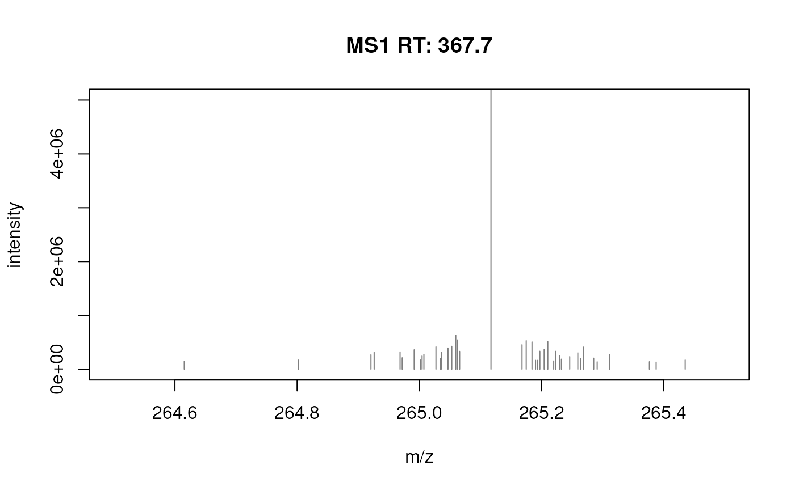

The filterFourierTransformArtefacts function removes (Orbitrap) fast
fourier artefact peaks from spectra. Such artefacts (also referred to as
rippples) seem to be related to the
ringing phenomenon and
are frequently seen in Orbitrap data as small random mass peaks ~ 0.01 Da
from a main peak with a very large intensity. See also
here
for more details and information. The data set fft_spectrum represents a
Spectra() object with a single Orbitrap spectrum with such artefacts (see
examples below).
See also Spectra() (section *Data subsetting, filtering and merging) for
the definition of the function.
The current implementation iterates through all intensity ordered peaks in a
spectrum and removes all peaks with an m/z within +/- halfWindowSize of
the current peak if their intensity is lower than threshold times the
current peak's intensity. Additional parameters keepIsotopes, maxCharge
and isotopeTolerance allow to avoid removing of potential [13]C isotope
peaks (maxCharge being the maximum charge that should be considered
and isotopeTolerance the absolute acceptable tolerance for matching
their m/z).
library(Spectra)
data(fft_spectrum)
plotSpectra(fft_spectrum)
## Focus on an artefact
plotSpectra(fft_spectrum, xlim = c(264.5, 265.5))
plotSpectra(fft_spectrum, xlim = c(264.5, 265.5), ylim = c(0, 5e6))
fft_spectrum <- filterFourierTransformArtefacts(fft_spectrum)
fft_spectrum
#> MSn data (Spectra) with 1 spectra in a MsBackendDataFrame backend:
#> msLevel rtime scanIndex
#> <integer> <numeric> <integer>
#> 1 1 367.665 195
#> ... 33 more variables/columns.
#> Lazy evaluation queue: 1 processing step(s)
#> Processing:
#> Switch backend from MsBackendMzR to MsBackendDataFrame [Mon Nov 22 14:14:45 2021]
#> Remove fast fourier artefacts. [Fri Jan 21 15:03:22 2022]
plotSpectra(fft_spectrum, xlim = c(264.5, 265.5), ylim = c(0, 5e6))

## R code to download/extract the data.
if (FALSE) {
library(Spectra)
# get orbitrap data
download.file("https://www.ebi.ac.uk/metabolights/ws/studies/MTBLS469/download/4cc5d820-dc5d-4766-8112-7a05f74acef4?file=AV_01_v2_male_arm1_juice.mzXML", "AV_01_v2_male_arm1_juice.mzXML")
data <- Spectra("AV_01_v2_male_arm1_juice.mzXML")
extracted_spectrum <- data[195]
}